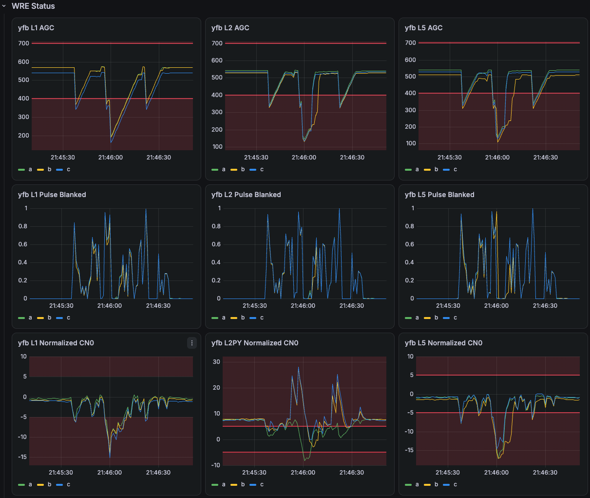

Weekly Highlights 20261118-20261125
DFO-2 Cutover Activities
The DFO-2 Field Test Activities to implement limited operational capability (LOC) of L5 messaging.
DFO-2 activities completed 11/7; 2-week monitoring period 11/7-11/21
L1/L2 Bias Alarms

11/17 - HNL WRE-A Freq Std Failed
- 11/17 09:12 - HNL WRE-A flapping alarm SE 59 Rcvr Reception Fault each clearing after ~10-20 seconds; last event rescinded at 11/17 13:41
- 11/18 10:18 - HNL WRE-A alarmed with SE 59 Rcvr Reception Fault clearing after ~17 seconds
- 11/18 19:15 - HNL WRE-A alarmed with SE 59 Rcvr Reception Fault clearing after ~27 seconds
- 11/19 03:16 - HNL WRE-A flapping SE 59 Rcvr Reception Fault each clearing after ~20 seconds...
- 11/19 06:47 - HNL WRE-A alarmed with SE 728 Subframe Reasonability for all C&Vs
- 11/19 12:09 - HNL WRE-A flapping SE 30 Minor Alarm from Freq Std
- 11/20 06:29 - HNL WRE-A to Maintenance and Control Powered to attempt to clear Freq Std issues; restored to Normal at 11/20 07:32 but continued flapping SE 30 Minor Alarms from Freq Std...
- 11/20 13:24 - HNL WRE-A alarmed with SE 745 CB Clock Err for all C&Vs
- 11/20 18:16 - HNL WRE-A to Maintenance for Freq Std replacement; restored to Normal at 11/20 21:31
11/18 - ZSU Subframe Reasonability
- 11/18 01:24 - ZSU all WREs alarmed with SE 728 Subframe Reasonability for all C&Vs -- PID WRS Down
- 11/19 01:13 - ZSU all WREs alarmed with SE 728 Subframe Reasonability for all C&Vs -- PID WRS Down
11/18 - WMS Subframe Data Err
Subframe Data Err 'PRN_Number' - This significant event indicates the issue number for the current subframe of a GPS satellite differs from its previous broadcast yet the current subframe data is identical to the previously broadcast data.
- 11/18 02:50 - All C&Vs alarmed with SE 732 Subframe Data Err 13; SEs rescinded at 11/18 03:00 (~571 seconds)
- 11/18 07:20 - All C&Vs alarmed with SE 732 Subframe Data Err 20; SEs rescinded at 11/18 07:30 (~570 seconds)
11/18 - ZLA GPS Clock Lost Timelock
- 11/18 10:00 - ZLA WMS GPS Clock alarmed with SE 202 GPS Clock Not Time Locked...
- 11/19 03:29 - ZLA C&V Faulted when site
technician cycled power for GPS Clock to clear
alarm; Operators set to Maintenance and
restored to Normal at 11/19
03:48 without restarting
- 11/19 03:29 - When ZLA C&V Faulted, S15-133 GEO changed Selected Source CV to ZTL; switched back to ZLA at 11/19 06:04
11/18 - YFB Subframe Reasonability
- 11/18 13:49 - YFB all WREs alarmed with SE 728 Subframe Reasonability for all C&Vs -- PID WRS Down
- 11/18 21:46 - YFB all WREs alarmed with SE 728 Subframe Reasonability for all C&Vs -- PID WRS Down
YFB is technically currently below the RX operating temperature (last ~24h)...

11/19 - ZLA TAP-A Tool Ports Reset
- 11/19 20:40 - ZLA C&V TAP-A Tool Ports A/B Reset for ~1 second
11/20 - SZ1 ACS-A Reset
- 11/20 11:36 - GUS Switchover-SM9 - DX1 to Primary / SZ1 to Backup to Reset ACS-A to address copy error log issue -- ref LIR 43432908
11/24 - YYR WRE-C Fault
- 11/24 16:18 - YYR WRE-C flapping with SE 30 Minor Alarm from Freq Std...
- 11/24 17:04 - YYR WRE-C Faulted with flapping SEs 29,52,53,59; Control Powered twice and restored to Normal at 11/24 18:49
- 11/24 19:01 - YYR WRE-C Faulted with SEs 52,53 and flapping SEs 29,52,53,59; Control Powered and restored to Normal at 11/24 20:04
turns out a wide open field can influence multipath by dewy grass
Various Comm Impacts
* Only captures major / long-term comm outages
CDB Comms
- 11/18 09:27 - CDB Ring 2 comms flapping; last event cleared at 11/18 09:35 (~166 seconds total)
- 11/18 09:48 - CDB Ring 1 comms down hard; line cleared at 11/18 09:49 (~88 seconds)
- 11/18 10:56 - CDB Ring 2 comms down hard; line came back up to flapping at 11/18 11:13; last event cleared at 11/18 11:20 (~1152 seconds total)
- 11/18 11:30 - CDB Ring 1 comms flapping with extended downs; last event cleared at 11/18 12:09 (~1455 seconds total)
- 11/18 12:39 - CDB Ring 2 comms down hard; line came back up to flapping at 11/18 13:33; last event cleared at 11/18 13:37 (~1670 seconds)
- 11/21 18:26 - CDB Ring 1 comms flapping; last event cleared at 11/21 18:35 (~312 seconds total)
- 11/21 18:42 - CDB Ring 2 comms down hard; line cleared at 11/21 19:14 (~1939 seconds)
- 11/22 13:16 - CDB Ring 2 comms flapping; last event cleared at 11/22 13:23 (~114 seconds total)
- 11/25 04:11 - CDB Ring 1 comms down hard; line cleared at 11/24 04:19 (~400 seconds)
YQX Comms
- 11/18 14:05 - YQX Ring 1 PRI comms down hard; line cleared at 11/18 14:19 (~835 seconds)
- 11/21 04:22 - YQX Ring 1 PRI / Ring 2 PRI comms down hard; both lines cleared at 11/21 09:47 (~19495 seconds)
- 11/22 20:08 - YQX Ring 1 PRI / Ring 2 PRI comms down hard; both lines cleared at 11/23 13:00 (~60708 seconds)
- 11/24 16:15 - YQX Ring 1 PRI / Ring 2 PRI comms flapping with extended downs; last events cleared at 11/24 19:52 (~3677 seconds total)
Other Sites
- 11/18 15:35 - BET Ring 1 ALT / Ring 2 PRI comms flapping; last events cleared at 11/18 16:14 (~234 seconds total)
- 11/18 17:39 - BET Ring 1 ALT / Ring 2 PRI comms flapping; last events cleared at 11/18 17:44 (~103 seconds total)
- 11/19 04:17 - YYR Ring 2 comms flapping; last event cleared at 11/19 04:54 (~272 seconds total)
- 11/19 06:48 - YYR Ring 2 comms flapping; last event cleared at 11/19 07:02 (~395 seconds total)
- 11/19 14:51 - BRW Ring 1 PRI / Ring 2 ALT comms started flapping; last events cleared at 11/19 23:01 (~310 seconds total)
- 11/19 14:59 - Reset ZLA COR-B subsystem to try to clear BRW comm down; line did not clear; all other lines cleared at 11/19 15:06 (~431 seconds)
- 11/19 18:56 - OTZ Ring 1 + Ring 2 PRI / ALT comms down hard -- OFFLINE; all lines cleared at 11/19 19:07 (~689 seconds)
- 11/20 12:35 - BET Ring 1 PRI / Ring 2 ALT comms flapping until down hard at 11/20 13:07; both lines came back up to flapping at 11/20 18:10; last events cleared at 11/20 19:30 (~21656 seconds total)
- 11/21 17:04 - BRW Ring 1 PRI / Ring 2 ALT comms flapping; last events cleared at 11/21 19:47 (~256 seconds total)
- 11/21 18:23 - YYR Ring 2 comms flapping; last event cleared at 11/22 00:41 (~329 seconds total)
- 11/23 04:20 - YYR Ring 2 comms flapping; last events cleared at 11/23 05:38 (~609 seconds total)
- 11/23 19:35 - YYR Ring 2 comms flapping; last events cleared at 11/23 20:03 (~134 seconds total)
8/13 BRW Ring 1 ALT / Ring 2 PRI Comms
- 8/13 10:57 - BRW Ring 1 ALT / Ring 2 PRI
comms flapping...
- 8/13 17:49 - BRW Ring 1 ALT comms down hard -- ref LIR 1472365532...
- 8/14 00:32 - BRW Ring 2 PRI comms down hard -- ref LIR 1472364732...
- 9/2 02:08 - BRW Ring 2 PRI comms came back up to flapping (~1.6 million seconds; down since 8/14); down hard again at 9/2 12:49...
- 9/2 03:24 - BRW Ring 1 ALT comms came back up to flapping (~1.6 million seconds; down since 8/13)...
- 9/16 16:46 - BRW Ring 1 ALT comms came back up to flapping (~984510 seconds, down since 9/5); line back down hard at 9/16 17:14...
- 9/16 17:51 - BRW Ring 1 ALT comms came back up to flapping; line back down hard at 9/19 02:06...
- 9/16 19:33 - BRW Ring 2 PRI comms came back up to flapping (~1.2 million seconds, down since 9/2); line back down hard at 9/16 19:52...
- 10/1 22:59 - BRW Ring 1 ALT comms came back up to flapping; down hard again at 10/1 04:12...
- 10/31 -
FTI no longer seeing issue at BRW, signal good from BRW. FTI seeing loss of signal@ARTCC. FTI & FAA dispatch to ZLA/ZAU/BRW for H2H testing sched'd 18Nov@1600z-- ref LIR 1472364732
5/11/23 Mexico Ring 2 Down Hard...
- 5/11/23 17:01 - MX Ring 2 SatCom upgrade begins; MX Ring 2 OFFLINE until upgrade troubleshooting is complete...
- Targeting network upgrade in CY26
- 3/12/26 Disconnect order
List of current offline WREs
List of current offline WREs -- ref WAAS Status Monitor
All Depot shipments to Mexico are halted until the customs process can be finalized
Currently working to assess MX Inventory to determine equipment refresh and restoration needs...
MMX -- WRS OFFLINE
- MMX WRE-A - 10/22/26-... - MMX all WREs to Verification for monitoring...
- MMX WRE-B - 7/29/26-... - MMX WRE-B to Maintenance to monitor site RFI -- ref LAD 1456891832
- MMX WRE-C - 8/21/26-... - keeping MMX at one thread while investigating RFI -- ref LIR 1189462124...
MMD
- MMD WRE-C - 10/20/25-... - Good Freq Std swapped into WRE-A to restore -- ref LIR 211505621
MPR
- MPR WRE-B - 5/3/24-... - Inits failing -- looks like a bad freq std; due to shipping issues, there is no spare Freq Std and no ETA to recover WRE-B... -- ref LIR 44170821

Major Events


Core I/F Status

Comm Events